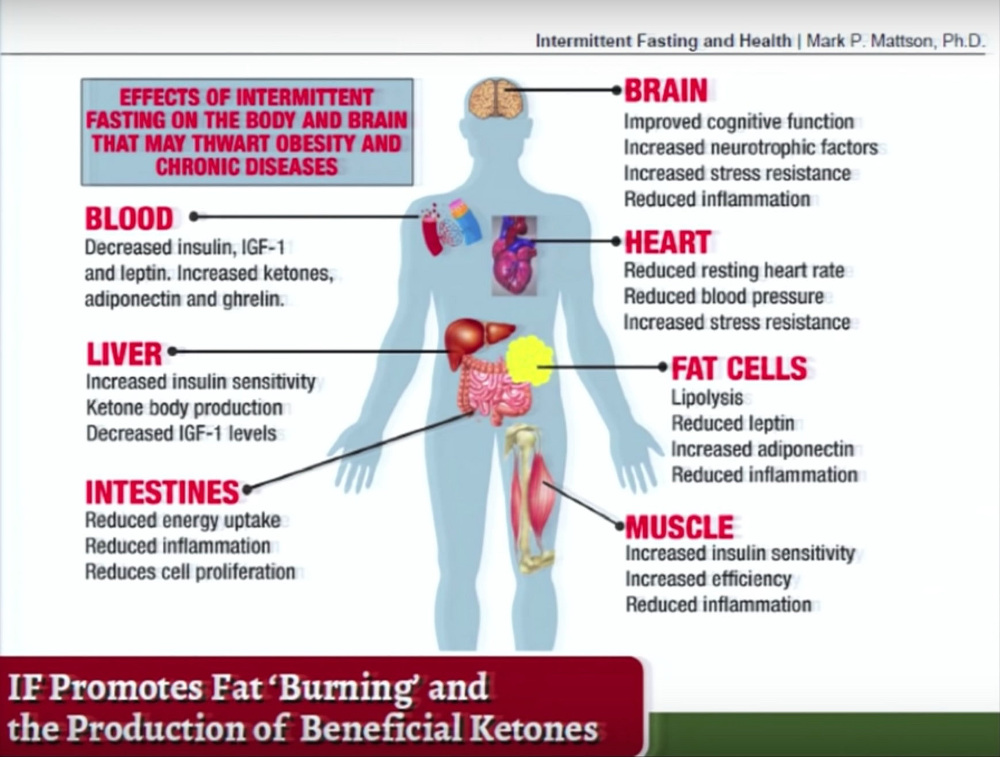

Intermittent Fasting
I've been a practitioner of Intermittent Fasting since I first trialled it back in 2019. There are a few variations, but the model I practice is Time Restricted Eating. Here is a summary.
What is it?
Time Restricted Eating is pretty simple. Eat an early supper, skip breakfast, and don’t snack in between. That’s it.
Breaking through the Fake News
Marketing companies don’t always tell the truth. You can’t believe everything you read on the internet. Here are a few falsehoods that I had been accepting as truths.
- “Breakfast is the most important meal of the day.” Not true. This is a line started in the 19th century by John Harvey Kellogg to sell his newly invented boxed breakfast cereal.
- When a person stops eating, the body goes into starvation mode and starts burning muscle. Also not true. Research now shows that when you stop eating, your body becomes much more efficient. You burn fat readily, not muscle. In fact, muscle breakdown doesn’t even begin until the second day of a full fast.
- You can eat whatever you want when intermittent fasting. Not true. You still can’t eat crap. It can be easier to eat healthier though, when you are eating over a shorter time frame.
Benefits of Intermittent Fasting
The purported benefits of Intermittent Fasting border on nothing short of miraculous. Studies on rats show incredible results, but obviously our physiologies are very different.
Benefits include:
- assists with optimal body composition
- reduced inflammation throughout the body
- increased mental acuity
- reduced risk of Alzheimer’s Disease
- reduced risk of cancer
- Rats on a time restricted diet also lived significantly longer.
From: Why fasting bolsters brain power: Mark Mattson
How Intermittent Fasting Works
When you stop eating over a period of time (approximately 10-12 hours), energy metabolism shifts, and begins depleting glycogen stores in your body. In other words, you start burning fat.
Is Intermittent Fasting a Fad
If you listen to all of the “new” hype and research going into fasting, you might think it’s a fad. There are many variations: the 'Fast 5', '8 & 16', '2 On, 5 Off'. However, fasting has been around for a very long time. Many religions have fasting as part of their longest traditions. Some of the greatest minds through history espoused the values of fasting. Plato, for example, would only teach students who were fasting.
Personal Experience with Intermittent Fasting
I have goals to be strong, fast, and flexible. My training regime is fairly intense, fully excluding the classes I teach, I now do Intermittent Fasting constantly, breaking the cycle only periodically, then jumping back on the wagon. My observations are as follows:
- Restricted Time Eating has changed my perspective on food. It brings into clarity the reasons I eat. Often I eat solely out of habit.
- It is easier for me to eat healthy, avoid crap, and consume my protein target in a smaller eating window. The Fasting Window is the times I usually snack.
- My energy level has remained high, and weight training is consistent. After the first week, there was no impact to my running times or plyo workouts.
- In the first two weeks of my original trial, I cut weight, nearly 8 lbs in two weeks, despite eating like a horse during the eating window.
- The first week was tough. I felt I was starving through most of the Fasting Window. By week 2, this was less. Now years into the program, I can tell the difference between "thinking I'm hungry" and actually needing food.